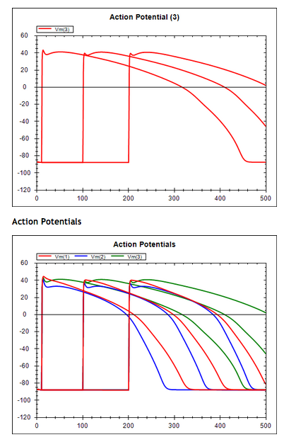

I wanted to have a play with some concrete examples of the SED-ML nested proposal with CellML models in order to be clear in my own mind about how this stuff works. So I wrote up a couple of dummy test cases: sin_approximations_sedml-nested-Frank.xml uses Frank's nested simulation variant of the proposal to trivial 'parameter scan' using a very simple test model, and sin_approximations_sedml-nested-Nicolas.xml does the same but using Nicolas' repeated task varianbt of the proposal. In both of these (and the following), the data generators are largely ignored and irrelevant for now.
Such trivial examples don't help a lot, so I thought I'd try something a bit more like what I'd actually want to be able to do. We have a CellML encoding of a really fancy and modern human cardiac electrophysiology model (The ORd human ventricular action potential model). This model has three variants representing the three cell types generally considered in modelling the electrophysiology of cardiac muscle - epicardial, midmyocardial, and endocardial. The specific variant for a simulation is selected with the celltype parameter in the model (0, 1, or 2). The default model includes a single electrical stimulus applied at the time specified by the stimStart parameter value.
So, to test out a simple repeated task I set up nestedTask-cellType-ORd.xml which uses a vectorRange to specify the values to loop over representing the various cell types. Because there are no tools to run this yet, I also set up various models needed to do this using SED-ML L1V1 which gives the following output using the SED-ML web tools.
The various CellML models are available in this workspace, and the SED-ML document is: ORd/nestedTask-cellType-ORd--sedml.xml.
Then I thought to test out nested repeated tasks, a common experiment to perform is to investigate the effect of stimulus protocol on each of the cell types. nestedTask-cellType-stimulusTime-ORd.xml uses the same repeated task to iterate over the various cell types, but now has a nested sub task which loops over multiple values for the time at which the electrical stimulus is applied. Once again, I set up a subset of the full set of models required to duplicate this experiment in SED-ML L1V1 which gives the following output from the SED-ML Web Tools.
The various CellML models are available in this workspace, and the SED-ML document is: ORd/nestedTask-cellType-stimulusTime-ORd--sedml.xml.